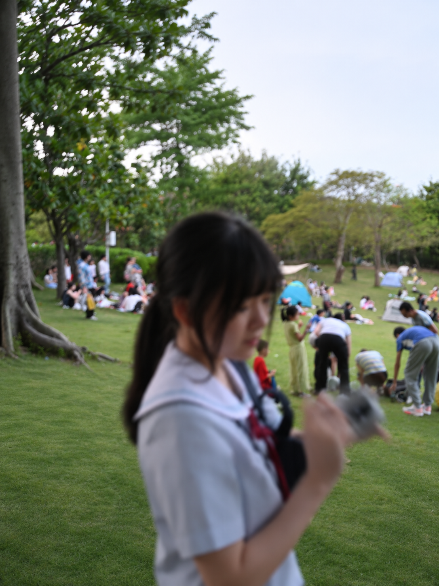

Project image
[Project 01]
[Describe the problem, what you built, and your contribution.]
Project notes
[Add a design decision, an experimental result, or an open question.]

I’m an undergraduate studying Industrial Design at Southern University of Science and Technology (SUSTech), in the School of Automation and Intelligent Manufacturing (formerly SDIM).
My experience spans product design, computational design, and electronic systems built with STM32 and Arduino. I enjoy hands-on prototyping and bringing ideas into physical form, drawing on my skills in modelling and simulation.
I’m exploring computational fabrication and physical computing: how computational tools, materials, and electronics can come together to create interactive objects. I’m also curious about how simulation can inform their design and fabrication.
Xiaoyuan Zhang, Yingpeng He, Junzhe Liao, Zhiyu Wang, Bingnong Jiang, Zhi Han, Yusi Wang, Yuan Chen
Submitted to Journal of Building Engineering (JBE)
2025 JIF: 8.1 · JCR Q1 (Construction & Building Technology)
Mengfan Wei, Junzhe Liao, Xiaoyuan Zhang, Zhi Han, Guixing Li, Yuan Chen
Submitted to Structural and Multidisciplinary Optimization
2025 JIF: 4.5 · JCR Q1 (Mechanics)
[Describe the problem, what you built, and your contribution.]
[Add a design decision, an experimental result, or an open question.]
[Describe the problem, what you built, and your contribution.]
[Add a design decision, an experimental result, or an open question.]
Aug 2023 – Present
Bachelor of Engineering in Industrial Design · Shenzhen, China
School of Automation and Intelligent Manufacturing